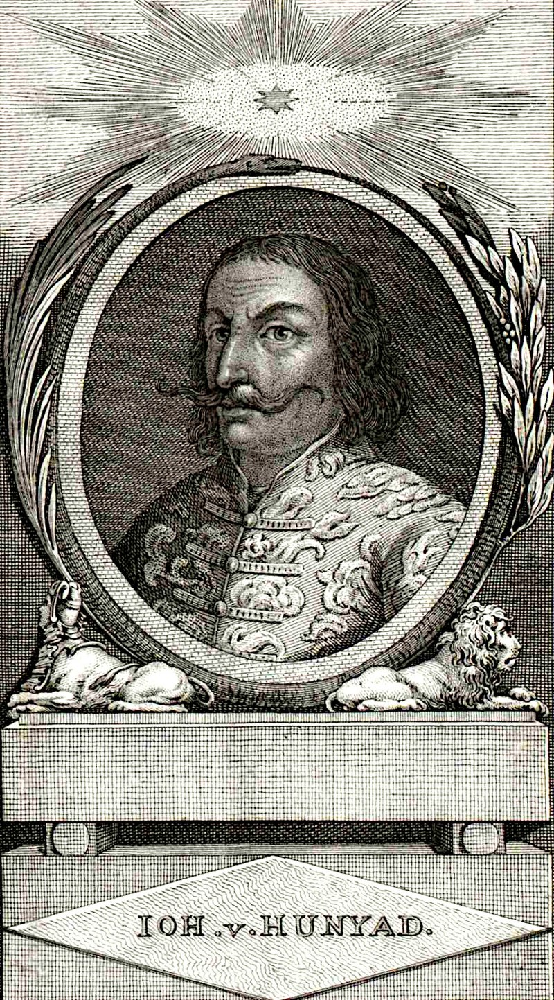

Hunyadi János
Élete-Hunyadi János Kolozsváron született, 1407-ben – meghalt Zimonyban, 1456. augusztus 11-én. Magyarország kormányzója 1446 és 1453 között. Az ország egyik leggazdagabb földesura, kiemelkedő hadvezér, több déli vármegye vezetője, erdélyi vajda. Hunyadi Mátyás és László édesapja. Az Oszmán Birodalommal szembeni küzdelmei, elsősorban a nándorfehérvári diadal révén már kortársaitól kivívta magának a törökverő melléknevet, annak ellenére, hogy az általa vezetett másik két jelentős csata, a várnai és a rigómezei súlyos vereséggel végződött. -Katonai pályafutását apródként kezdte, előbb Ozorai Pipó, majd Lazarevics István szerb despota szolgálatában állt, mellettük megismerte a törökök harcmodorát. 1427-től Újlaki László, később Csupor Demeter csapataiban szolgált. Írni-olvasni, latinul beszélni valószínűleg nem tudott. -Mivel tehát két évig Milánóban élt a hercegnél, nem vehetett részt 1433. május 31-én Rómában Zsigmondnak német-római császárrá történt koronázásán. -1433-tól udvari lovag 1434-ben Bázelbe, majd Csehországba is elkísérte a császárt, és részt vett a huszita háborúkban. Az itt szerzett tapasztalatokat később a török elleni harcaiban is kamatoztatta. -Idővel a királyi tanácsban is helyet kapott. 1439-ben szörényi bán, tehát zászlósúr lett. Blaschke János rézmetszete, 1807 Felemelkedése-Katonai pályafutását apródként kezdte, előbb Ozorai Pipó, majd Lazarevics István szerb despota szolgálatában állt, mellettük megismerte a törökök harcmodorát. 1427-től Újlaki László, később Csupor Demeter csapataiban szolgált. -Albert király halála után Ulászló megválasztásáért harcolt. A király hálából 1441-ben Újlaki Miklóssal együtt kinevezte erdélyi vajdának, temesi ispánnak és nándorfehérvári főkapitánynak ezzel a déli határ védelmének irányítója lett. -Érdemei alapján rövid idő alatt hatalmas birtokadományokban részesült, halálakor már olyan hatalmas földterületek, összesen mintegy 4 millió katasztrális hold tulajdonosa volt, amihez fogható magyar földön sem azelőtt, sem azután nem volt egy kézben. Óriási vagyona jövedelmét, ezernyi familiárisának katonai és politikai súlyát azonban elsősorban a török háborúk céljaira fordította. |
|---|